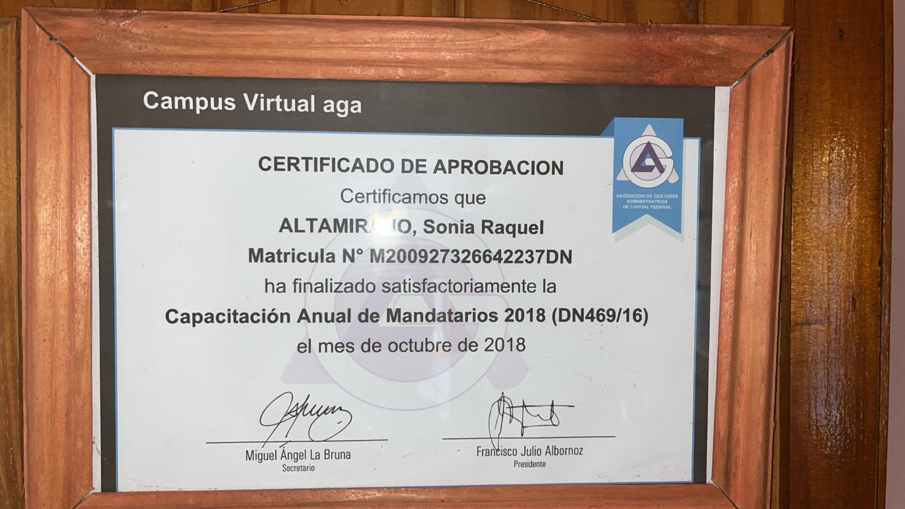

AGA � 2018
Capacitaci�n Anual de Mandatarios 2018
Certificaci�n de aprobaci�n de la capacitaci�n anual de mandatarios, finalizada en octubre de 2018 y vinculada a la actualizaci�n profesional para el ejercicio de la matr�cula.